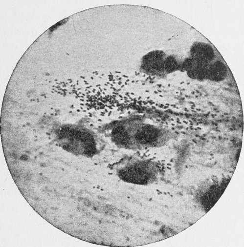

Bacteriology Of Influenza
Description
This section is from the book "Malaria, Influenza And Dengue", by Julius Mennaberg and O. Leichtenstern. Also available from Amazon: Malaria, influenza and dengue.
Bacteriology Of Influenza
The rapid distribution of the pandemic immediately led the bacteriologists of all countries to investigate and try to discover with the microscope the new germ, the specific cause of the disease. There was a veritable plethora of reports produced regarding the bacterio logic findings in the various secretions of influenza patients, especially in the pneumonic and pleuritic exudates. In every case it was previously well known pathogenic cocci (streptococci, staphylococci, pneumococci, occasionally also Friedlander's bacillus) which were found, either singly in pure culture or in combination with each other.
In some places, as Vienna, Strassburg, etc., it was principally the Diplococcus lanceolatus which was found in the pneumonic areas, in the sputum, and in the otitic and meningeal pus, while in other places, like Bonn, Paris, etc., streptococci were usually found. All the expert bacteriologists correctly interpreted their findings at that time in considering the above named cocci as of only secondary significance. Only one observer was so far misled by the frequent presence of the streptococci as to believe himself justified in proclaiming the Streptococcus pyogenes as "the most probable exciting cause of influenza." This attempt to identify the causa morbi, based chiefly upon the presence of streptococci in the inflamed lungs of influenza patients, is all the more incomprehensible since long before the outbreak of influenza it was well known that streptococci were frequently found in the mixed infections of various forms of, and particularly of croupous, pneumonia (Naunyn, 1887), but also that these organisms probably possessed the power in themselves of causing pulmonary inflammation.
The historic micrococci which O. Seifert first found in a small "influenza" epidemic of 1883, judging by description, were probably streptococci. Some observers who found previously known pyogenic cocci, nevertheless wanted to consider them, on account of unimportant tinctorial or cultural peculiarities, as a variety peculiar to influenza. But all these observations, as well as those of a few "specific varieties of bacteria" claimed to have been found at that time, some being cocci, others bacilli or diplobacilli (Teissier), and even some flagellata, proved to be fallacious or without significance. Thus, the very promising bacteriologic investigations of influenza during the years 1889-1892 produced completely negative results, but the energy applied to the investigations was not wasted, since the results showed that in the various pathologic conditions produced by influenza, especially in the pneumonic and pleuritic exudates, simultaneous or secondary infection by the well known pyogenic and pneumonia producing agents plays an important role.
The hope of finding the specific cause of influenza appears to have been universally abandoned, when R. Pfeiffer, in the beginning of the year 1892, published his sensational announcement "regarding the cause of influenza," a discovery which found recognition and substantiation by the bacteriologists of all countries. In the following description of the most important characteristics of the influenza bacillus we adhere strictly to the account given by its discoverer.
Morphology
The influenza bacilli are extremely small rods, being among the smallest ones that have yet been cultivated. They are only two or three times as long as they are broad [being 0.4 p. broad and 1.2 p long.-Ed.]; longer forms are occasionally met with in sputum, and more frequently in pure cultures; these are to be regarded as short pseudostreptothrix forms. The ends of the rods are rounded. They have no capsules. They are non motile in hanging drop. They do not stain by Gram's method. The size of the bacilli in sputum sometimes varies considerably, just as many other kinds of bacteria do.
The accompanying photomicrograph represents the sputum from a recent febrile case, and is taken from the article of R. Pfeiffer.*
Very frequently two extremely short bacilli are found together, one closely behind the other. Weak staining will sometimes give the appearance of a vacuole in the center of the bacillus, produced by a deeper polar staining. In this way preparations remarkably like diplococci may be produced. Doubtlessly these small, numerous influenza bacilli were seen by many observers, even in the first pandemic of 1889-1890, as indicated in several descriptions (Babes and others). Pfeiffer, in particular, had seen them already in 1890, and had published photographs of the same in M. Kirchner's article.
Fig. 39.-Influenza Bacilli in Sputum (according to R. Pfeiffer; photomicrograph, X 1000).
In recent, still febrile cases of influenza the bacilli are found in heaps or in clumps embedded free in the mucus of the sputum, while the pus corpuscles contain but few bacteria. During the course of the disease and during convalescence the microscopic picture changes in a characteristic manner. The number of the free organisms gradually decreases, but the pus cells are crowded with the fine rods. During this stage involution forms are frequently seen; the bacilli become abnormally narrow or plump, assume irregular shapes, stain badly, and become converted into a fine molecular detritus. Bacteria undergoing such changes are found, upon inoculation into culture media, to be dead.
* "Zeitschr. f. Hyg. u. Infectionskrankh.," vol. xiii, Fasc. 3, Plate IV, Fig. 1.
The period during which influenza bacilli are present in the sputum cannot be definitely stated. In typical acute cases they are present only for a few clays. [The period has become gradually less since the epidemic of 1890.-Ed.] In those cases where convalescents recover very slowly and suffer for weeks with bronchial manifestations, the specific bacilli are found for weeks in the sputum, which indicates that "local influenza areas" continue to exist in isolated bronchial areas. Pfeiffer describes these cases as "chronic influenza." Especially in phthisical individuals affected by influenza, and particularly those with cavities, influenza bacilli may be found in the sputum for weeks and even months (Pfeiffer, Kruse).
Staining Of The Influenza Bacilli
The influenza bacilli take the basic anilin stains very badly, and belong to the class of microbes which stain with difficulty. It is necessary to allow the dried and fixed cover glass preparations of sputum to remain floating for some time-at least ten minutes-upon the staining solution. It was no doubt partly through neglect of this precaution that the influenza bacillus which presents so characteristic a picture of a pure culture in sputum was so long overlooked. The best stain is Ziehl's carbol fuchsin solution diluted 20 times, or hot Loeffler's methylene blue solution. [Bacillus influenzae stains more deeply than the other bacteria present.-Ed.]
Continue to:
Tags
mosquito, malaria, influenza, dengue, symptoms, outbreaks, diseases, hemoglobinuria, infections